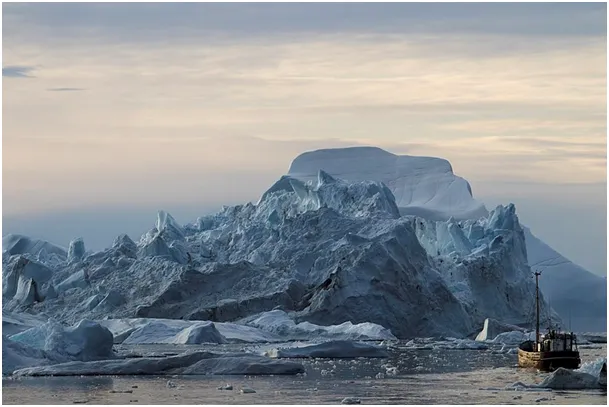
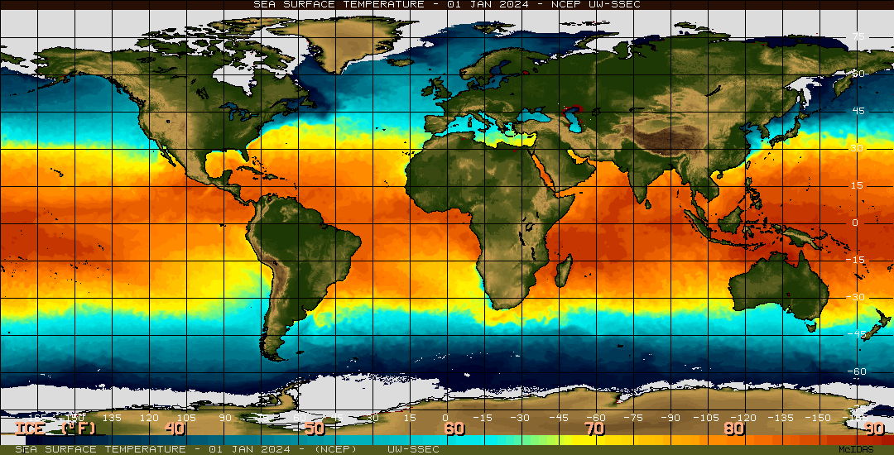
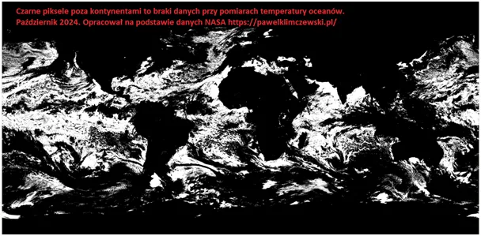

Znikające góry lodowe
293 dni minęło od Nowego Roku i tyle w archiwach klimatystów i karbo-frustratów jest map świadczących o globalnej katastrofie. Warto przyglądać się tym danym z dużej perspektywy i z dystansem. Zrobiłem animację z dobowych map temperatury i zlodowacenia powierzchni oceanów i niespodziewanie wokół Antarktydy zobaczyłem pojawiające się i zanikające wielkie góry lodowe, taka góra, czy kra latami potrafi dryfować, więc o co chodzi?

Wspominam w moich postach o tym, że w okolicach arktycznych satelity rzadko latają, a jeśli nawet obejmują swym obiektywem te obszary to najczęściej są one pokryte chmurami, taki mamy klimat w okolicach polarnych. Chmury są białe jak śnieg, co w języku fizyki oznacza, że odbijają każde światło widzialne i krytycznie zasłaniają obszar pod nimi dla wielu zakresów fal używanych przy skanowaniu powierzchni Ziemi.

Na drugiej mapie kolor czarny (poza kontynentami) pokazuje, gdzie w typowym dniu października 2024 nie udało się zmierzyć temperatury oceanów z powodu zachmurzenia. Skala braków danych jest olbrzymia. Opracowuję szczegółowy raport o skali błędu pomiarowego, jaki ludzkość "akceptuje" i składa na ołtarzu nowej religii. Zapraszam do lektury i wspierania mojej bezpiecznej, szyfrowanej strony
Paweł Klimczewski